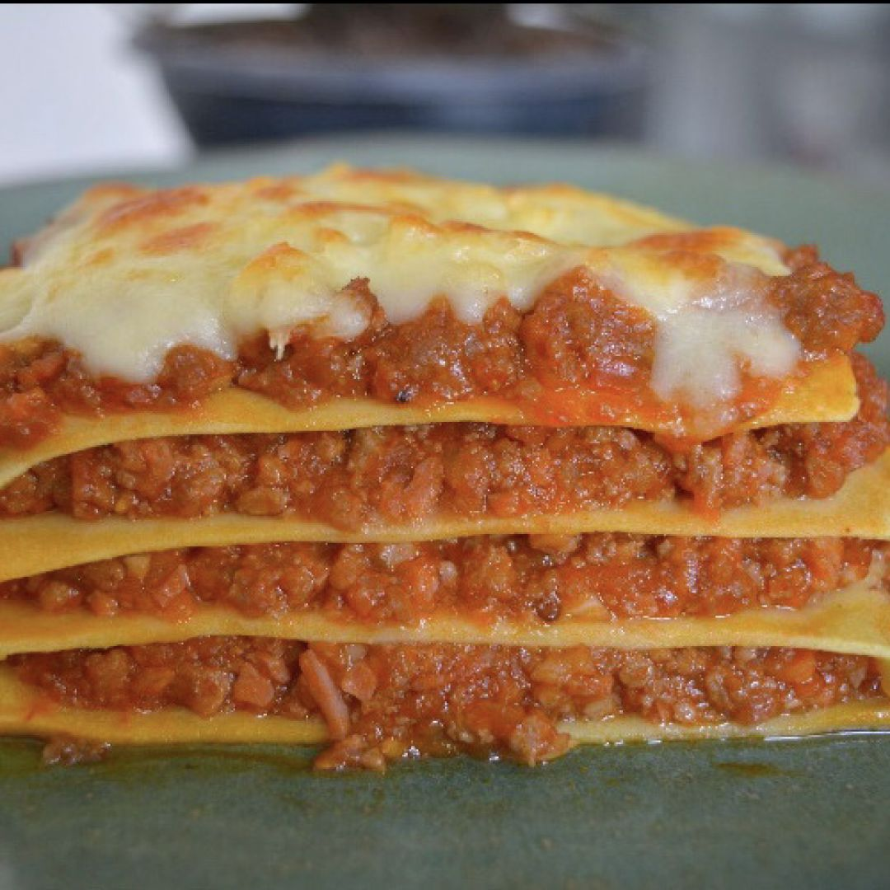

Receita de lasanha

Descrição:
Receita de lasanha bolonhesa para aproveitar com toda a familía
ingredientes:
- 1 cebola média picada
- 2 dentes de alho picados
- 2 colheres (sopa) de azeite
- 1 lata/caixa de molho de tomate (aprox. 340g)
- Sal e pimenta-do-reino a gosto
- Orégano ou manjericão a gosto
- 2 colheres (sopa) de manteiga
- 500g de carne moída
- 500g de massa para lasanha
- 300g de presunto fatiado
- 300g de queijo mussarela fatiado
- 1 caixa de creme de leite
- 1/2 litro de leite
- 2 colheres (sopa) de farinha de trigo
- Queijo parmesão ralado a gosto
Preparo:
- Em uma panela, aqueça o azeite e refogue a cebola até ficar transparente.
- Adicione o alho e refogue por mais alguns segundos.
- Acrescente a carne moída, tempere com sal e pimenta-do-reino e cozinhe até dourar.
- Coloque o molho de tomate, o orégano ou manjericão, misture bem e deixe cozinhar por cerca de 10 minutos. Reserve.
- Em outra panela, derreta a manteiga, adicione a farinha de trigo e mexa bem.
- Acrescente o leite aos poucos, mexendo sempre, até formar um molho branco cremoso.
- Desligue o fogo e misture o creme de leite ao molho branco. Ajuste o sal se necessário.
- Em um refratário, coloque uma camada de molho vermelho no fundo.
- Faça camadas alternando massa de lasanha, presunto, mussarela e molho branco.
- Repita as camadas até finalizar os ingredientes, terminando com queijo mussarela.
- Finalize com queijo parmesão ralado por cima.
- Leve ao forno preaquecido a 180 °C por aproximadamente 40 minutos, ou até gratinar.
- Retire do forno, deixe descansar por alguns minutos e sirva.
Voltar para página inicial